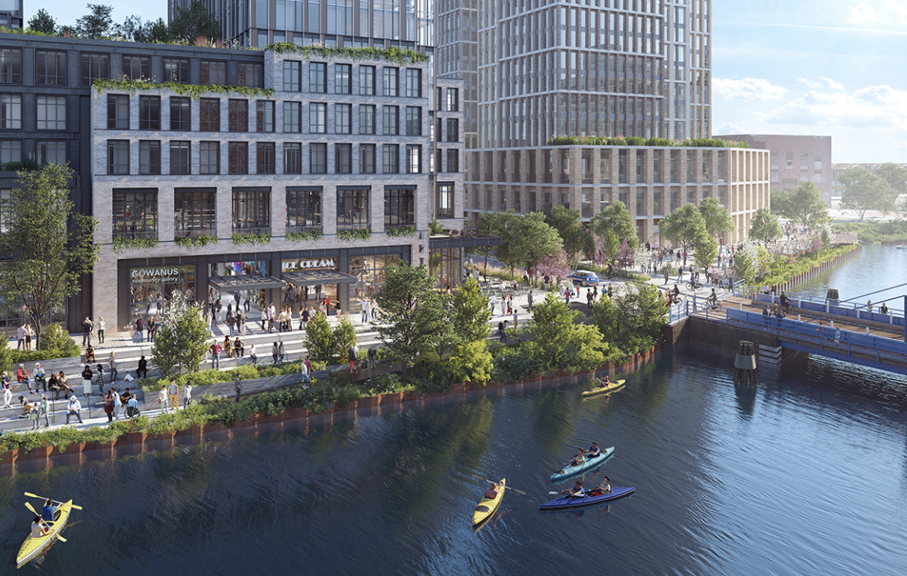

Gowanus Neighborhood Plan
Use the dropdown menu to see how different parts of Gowanus will look after they're redeveloped under the Gowanus Neighborhood Plan.

BEFORE: Low-rise buildings occupy much of Carroll Street.

AFTER: A 14-story mixed-use building with nearly 1,000 affordable housing unites will be situated at 544 Carroll Street.

BEFORE: A warehouse and parking lot are situated on Nevis Street.

AFTER: Nevis Street will welcome more than a dozen commercial businesses. The canalside complex at Nevis Street will be at the heart of the Gowanus waterfront’s revitalization.

BEFORE: Laquer Street is home to a few low-rise buildings. The site suffers from coal-tar contamination from the nearby Gowanus canal.

AFTER: Gowanus Green will house an affordable housing complex composed of six buildings on a 5.6-acre lot. All 950 apartments will be dedicated to lower-income city residents.
BEFORE: A dumping ground occupies part of Presidents Street.